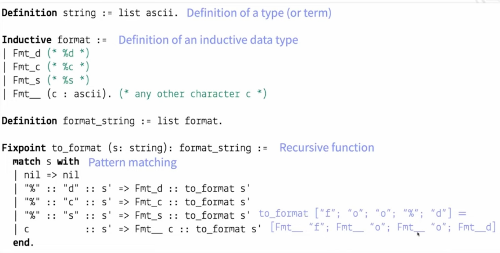
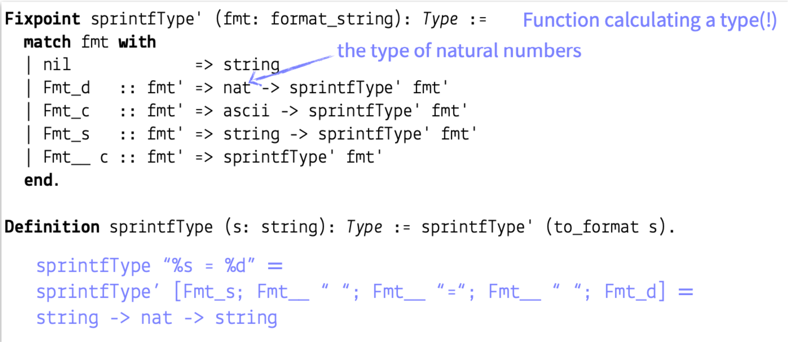

Coq is a purely functional language that with dependent types:
Terms can depend on terms(i.e. regular functions)
Terms can be depend on types (polymorphic terms); e.g. List<T>
Types can depend on types (type constructors)
List::
Types can be depend on terms
For example, sprintf in C library takes in a format string, and uses vaiable length arguments to indicate its conversion. Here are some examples:
sprintf "foo"
sprintf "x = %d" : (takes int and returns string)
sprintf "%s = %d" :
sprinf : . It depends on its first argument.
sprintf (s:string) : sprintType s.

